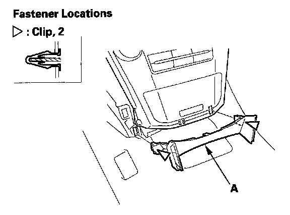
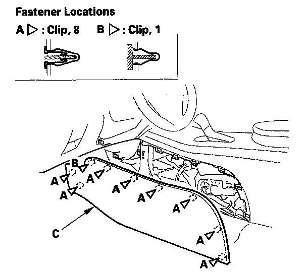
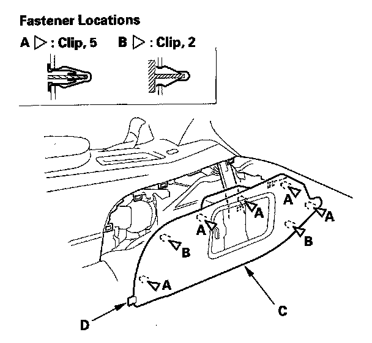
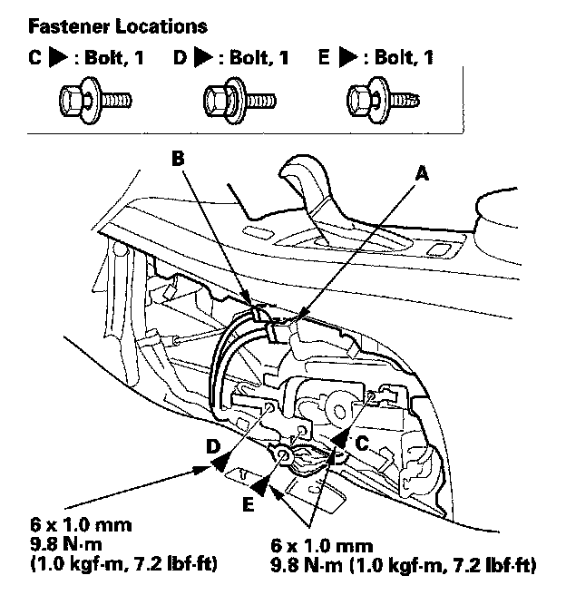
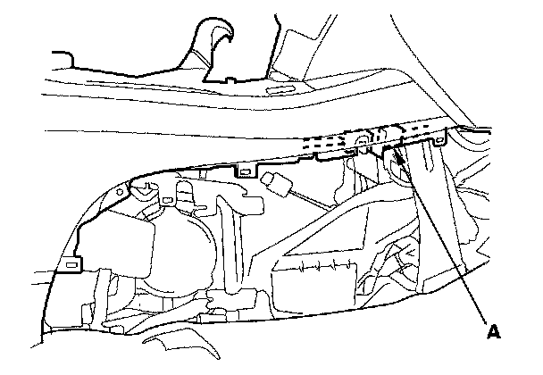
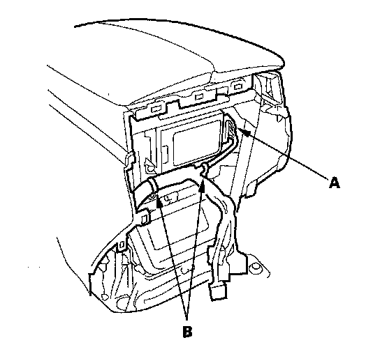
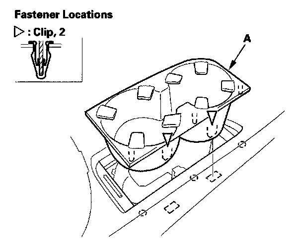
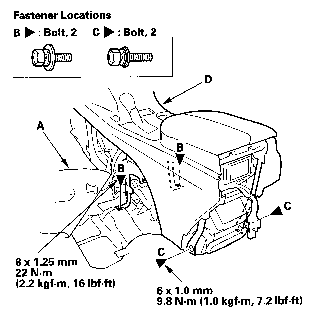
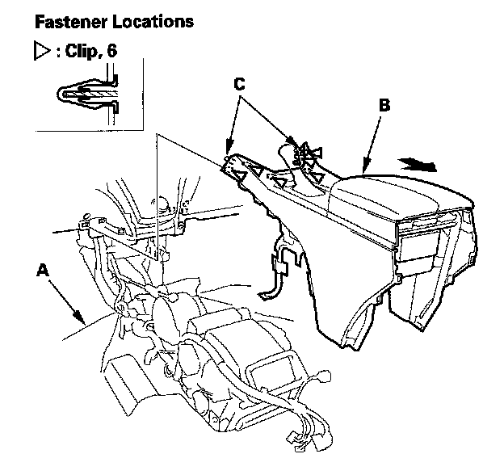

Center Console
Center Console Removal/InstallationSpecial Tools Required
KTC trim tool set SOJATP2014 *
* Available through the American Honda Tool and Equipment Program
SRS components are located in this area. Review the SRS component locations and the precautions and procedures before doing repairs or service.
NOTE:
- Put on gloves to protect your hands.
- Use the appropriate tool from the KTC trim tool set to avoid damage when removing components.
- Take care not to scratch the front seat, dashboard, and related parts.
1. Make sure you have the anti-theft codes for the audio and the navigation system (if equipped).
2. Disconnect the negative cable from the battery, and wait at least 3 minutes before beginning work.
3. Remove these items:
- Driver's inner dashboard trim
- Passenger's dashboard trim
- Console rear trim
- Front seats, both sides

4. Detach the clips by pulling the console lower trim (A) back by hand, then remove it.

5. Detach the clips (A, B) by pulling the driver's center console trim (C), then remove it.

6. Detach the clips (A, B) by pulling the passenger's center console trim (C) out, and pull it forward to release its pin (D) from the center console, then remove it.

7. From driver's side, disconnect the parking pin shift connector (A) and shift lock solenoid connector (B). Remove the rear blower motor relay mounting bolt (C), second row seat heater relay mounting bolt (D) (for some models), and ground bolt (E).

8. From passenger's side, disconnect the console subharness connector (A).

9. Disconnect the HandsFreeLink control unit connector (A), and detach the harness clips (B).

10. Open the beverage holder lid. Pull the beverage holder inner case (A) up by hand to detach the clips, then remove it.
11. Shift the shift lever into the R position, then disconnect the A/T shift cable.

12. Pull back the carpet (A) as needed, then remove the bolts (B, C) securing the center console (D).

13. Pull back the carpet (A) as needed. Slide the center console (B) backward to detach the clips and pins (C) from the dashboard, lift the console up, then carefully remove it.
14. Install the console in the reverse order of removal, and note these items:
- If the clips are damaged or stress-whitened, replace them with new ones.
- Push the clips into place securely.
- Before tightening the bolts, make sure the dashboard wire harness is not pinched.
- Make sure the connectors are plugged in properly.
- Reconnect the negative cable to the battery.
- Enter the anti-theft codes for the audio and navigation system (if equipped).
- Set the clock.
- Check for any DTCs that may have been set during repairs, and clear them.
- If necessary, adjust the shift cable.
- Do the steering column position memorization.